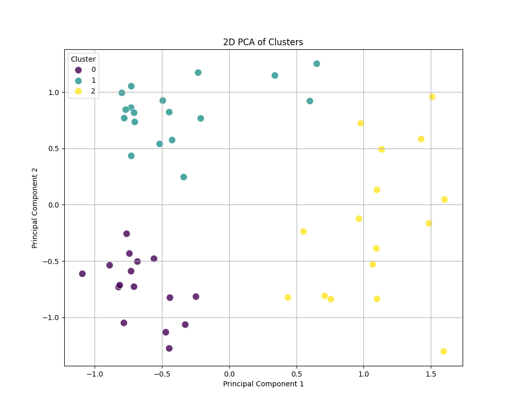
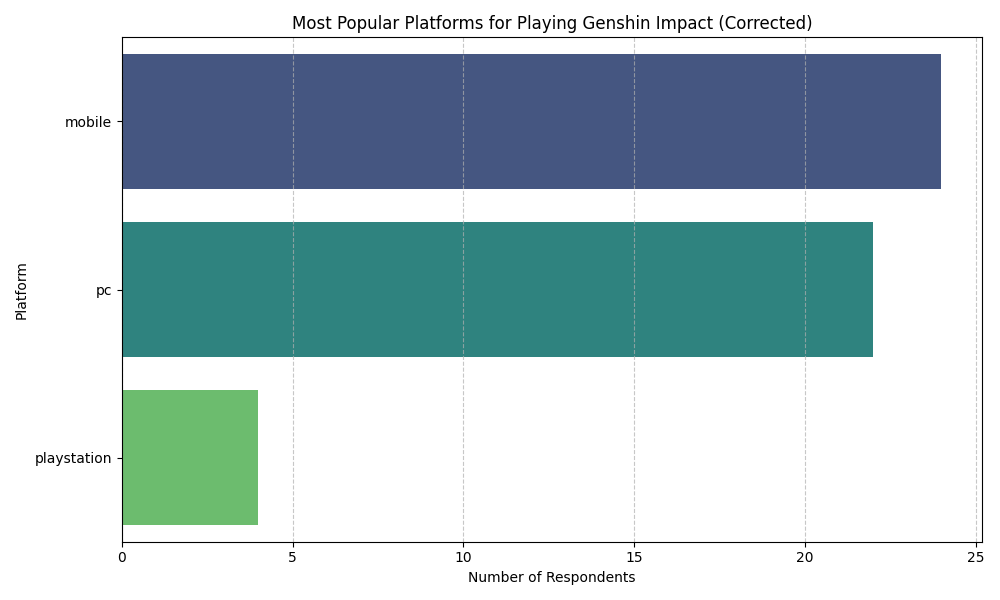

Genshin Impact Survey Analysis: Player Behavior & Preferences
Problem Statement (Objective)
"Can we predict whether a player participates in Spiral Abyss based on their gameplay preferences and profile?"
Cluster Analysis Graph
Cluster Insights
Cluster 0 Insights:
- Predominantly mobile players (100.00%).
- Top favorite region is Inazuma (25.00%).
- Top favorite element is Hydro (31.25%).
- Top favorite weapon type is Bow (31.25%).
- Most of these players do play Spiral Abyss (100.00%) and have an Adventure Rank of 60 (62.50%).
- Their top favorite Archon is Venti (31.25%).
Cluster 1 Insights:
- Mainly PC players (94.44%).
- Also show a strong preference for Inazuma region (33.33%).
- Top favorite element is Dendro (27.78%).
- Top favorite weapon type is Polearm (38.89%).
- Most do play Spiral Abyss (83.33%) and have an Adventure Rank of 60 (83.33%).
- Their top favorite Archon is Furina (33.33%).
Cluster 2 Insights:
- A mixed group in terms of platform, with mobile being the most frequent (37.50%).
- Have a clear preference for the Sumeru region (43.75%).
- Top favorite element is Pyro (25.00%).
- Top favorite weapon type is Bow (37.50%).
- Notably, none of the players in this cluster play Spiral Abyss (100.00% 'no'). Their Adventure Rank is often 60 (37.50%), but this is less dominant than in other clusters.
- Their top favorite Archon is Nahida (25.00%).
Overall Key Findings
Platform Preference Graph
Preferred Gaming Platforms
- PC Dominance: The data clearly indicates that PC is the most preferred platform for playing Genshin Impact among the surveyed individuals, accounting for the largest proportion of respondents.
- Strong Mobile Presence: Mobile devices represent the second most popular platform, showing a substantial segment of players who prefer handheld gaming for Genshin Impact. This indicates the game's significant reach on portable devices.
- Limited Console Preference: PlayStation (PS) usage is notably lower compared to both PC and Mobile, suggesting that console gaming, at least among this specific respondent group, is a less common choice for Genshin Impact.
Region and Archon Preference Alignment
Region vs. Archon Preference Graph

- Strong Alignment of Region and Archon Preference: For most regions, there's a very strong tendency for respondents to favor the Archon associated with that specific region.
- Mondstadt: Players whose favorite region is Mondstadt overwhelmingly prefer Venti.
- Liyue: Similarly, Zhongli is the clear favorite among Liyue enthusiasts.
- Inazuma: The Raiden Shogun (Ei) is the dominant choice for those who favor Inazuma.
- Sumeru: Nahida is the most preferred Archon by players who choose Sumeru as their favorite region.
- Fontaine: Furina is the most popular Archon among those who favor Fontaine.
- Minor Cross-Regional Preferences: While the primary alignment is strong, the chart also shows a smaller number of players who might prefer an Archon from a different region than their favorite. For example, some Mondstadt fans might like Nahida, or some Liyue fans might like Furina, but these numbers are significantly lower than the region-specific Archon preference.
- Insights into Character Affinity: This strong correlation suggests that players often develop a deep connection to the lore, aesthetics, and characters of a region, with the Archon serving as a central figure embodying that region's appeal. It indicates that the Archons are highly successful in representing their respective nations in the eyes of players.
Prediction Model Information
Model Used: Random Forest Classifier
Prediction Accuracy: 60% (on a small sample of 50 entries)